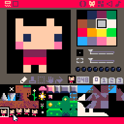

pico-8 is a game engine with intentional limitations (a 16-color palette, a 128X128 sprite sheet, a code token limit) intended to breed creativity and encourage rapid prototyping.
a perfect fit for this class! over the course of 12 weeks we made over 25 games in total. we were inspired by adam saltsman's approach to making small games.
if you would like to play, pico-8 only has six buttons:
- : z or c
- : x or v
- : arrow keys
try out a game below!